感觉他俩的前女友能站满整个篮球场[憨笑]
两广的美式比美国都多[捂脸]
世界美式看中国 中国美式看广东
他在广西是不是随便吃[看]
强硬美式的感觉[捂脸]
大家好像都没有记忆
感觉国内的美式已经泛滥了
冷知识：两广地区美式男孩没去过美国[黑脸]
上次据说一个留子没买电视，很嘚瑟的给NHK放进来看，结果买的冰箱上有个小屏幕能看电视，还是被K了[捂脸]
没有咨询，只不过是会让医生忙一点，那如果没有医生，咨询者算个什么东西[看][看]
确实有点谈吐在身上
说实话，当爸爸高高举起狗子的时候，我也再帮忙使劲了[捂脸][捂脸]有同感的请举手
狗子：“有人吗？我来找死来了”[看]
爸爸的手臂虽然咬伤了，但还是进来不顾疼先抱起了孩子[赞]
这是一个靠谱的爹[鼓掌]
这才是我认为的帅[眼含热泪][眼含热泪]
知道你们懒得打字，一个逗号全接了
央视军事官宣了[流泪][流泪]
不然你以为，一几年拍歼20那老哥进去十几年，出来拍歼36[泪奔]
这这这，这是谁把六代机照片放在我手机里了？
这不是借口，大车完全可以用帆布包好竹子的
厨房里的大米，厨房里的酱油，厨房里的味精，嘿嘿嘿，我的父亲是的厨师
你闺闺的崽对你有点意见[黑脸]
是这样吗 哈哈哈哈 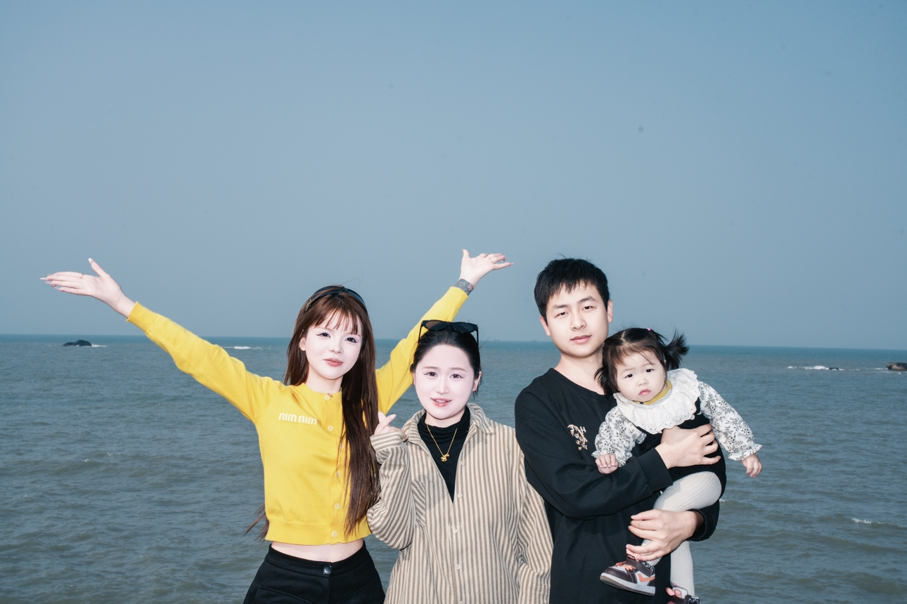
@Lzxxxlann. 我觉得这样的四人行 比我找到男朋友容易实现一点[感谢]
咋，你以为我愿意做这[尬笑]
狗真的能闻出来吗[冷漠]
那个。。。能录个高德的导航吗[泣不成声]
手腕柔韧性挺好呀[偷笑] 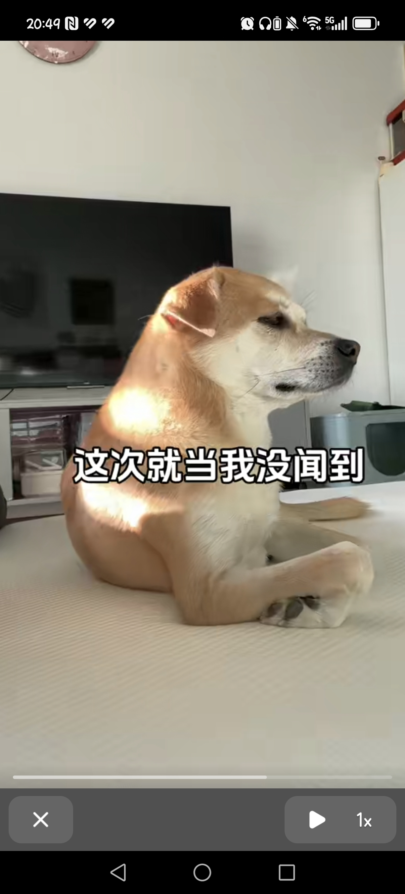
周泽祺，你的同学们呢？全被你毕业了吗[憨笑][强壮]
周泽琪我还有小号的 你终究是防不住我的[憨笑][饺子]
周泽祺你忘记屏蔽我了[憨笑][赞]
周泽祺你等着，我们几个明天围着你跳[黑脸]
周泽祺其实我每个ip都有号[愉快]
周泽琪其实我不认识你[黑脸]但评论区的好像都认识
男人就喜欢搞不定的
脑子没反应过来，嘴先吃上了
给它尝一尝这个 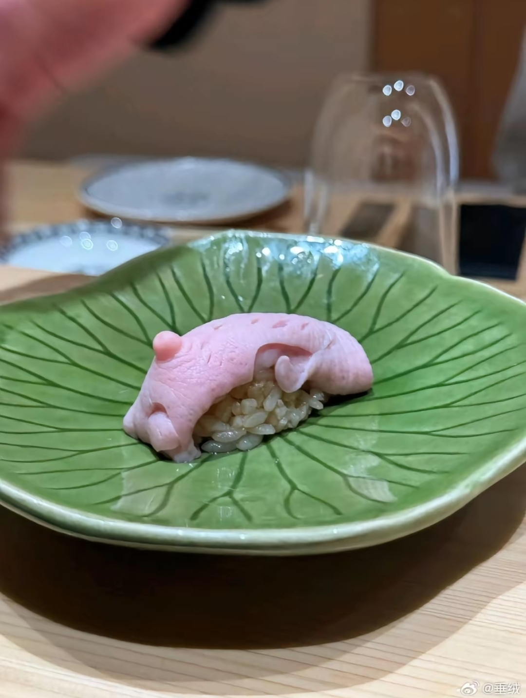
🐶：管他呢，张嘴我就是吃
此刻代码已经崩溃，全靠病毒撑着！
狗：给我当日本人整了[暗中观察]
这可不是二次呼吸，步伐沉重，摇头，不顾一切的摆臂带动身体，这是拼命了。。
这是二次呼吸？确定不是肾上腺素爆缸
达二级那次最后100米看不清东西了都，使劲甩[流泪]到地方腿像裂开了，肺上不来气差点没了浑身抖
我买了这个套餐给备注商家想要这个然后商家不理我给我发了一个丑不拉几的史蒂夫[憨笑]
放公司准备等它炸掉 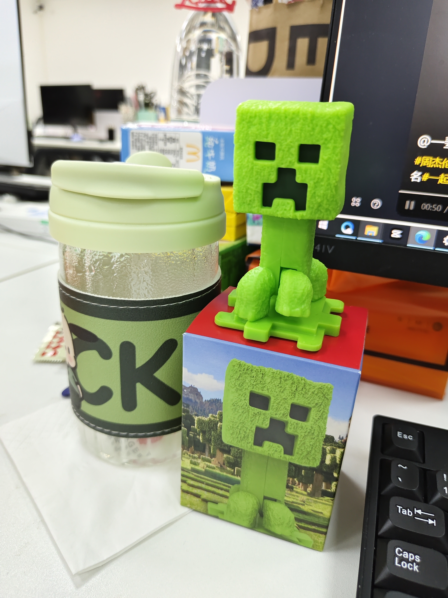
起初人们以为这只是个玩笑[捂脸]
谁会在深夜在祠堂唱戏，那就不是给人听的
我为你唱一曲[流泪]
以前唱大戏是下九流没有那个老祖宗会愿意让后面人学这个的。
愿天仙界，仙道永昌[看]
不敢相信，编剧那时候有多想死
给狗狗穿个裤衩吧，出门别让耗子给配了[捂脸]
是这样的，给你们看看我们新疆人的猫
马上会捞油香了
大家坐好，我要念了[看]

大家好我阿达西战猫，我是本猫，不是别猫，我的手段你知道，miao～
新疆猫[愉快][鼓掌] 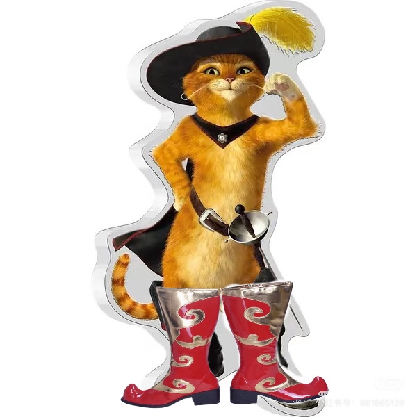
新疆所有小猫的名字“麦格来”
我顶着这个ip 还不如一只喵灵活[发呆]
没错，到西部去，到祖国需要的地方去
这脸放在西部片里，一点都不违和[捂脸] 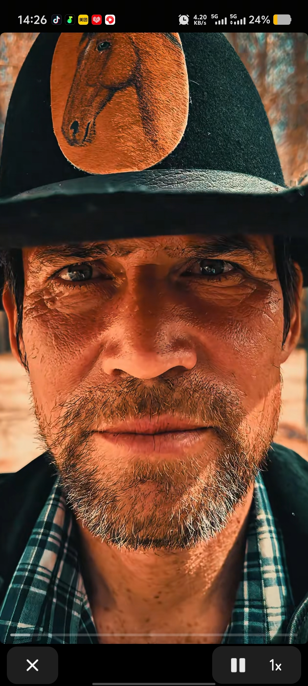
我知道新疆在西边，没想到这么西
新疆大镖客[送心] 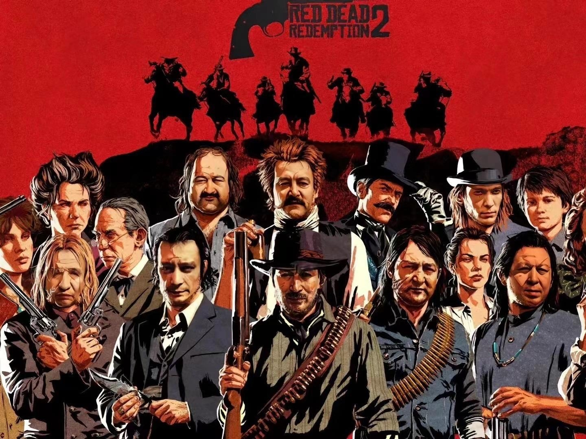
这个人绝对能拍 加勒比海盗[呲牙] 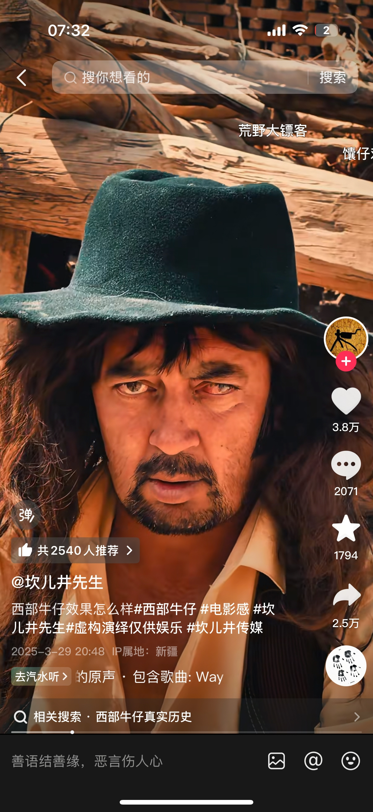
这次太帅了吧哥们儿[捂脸] 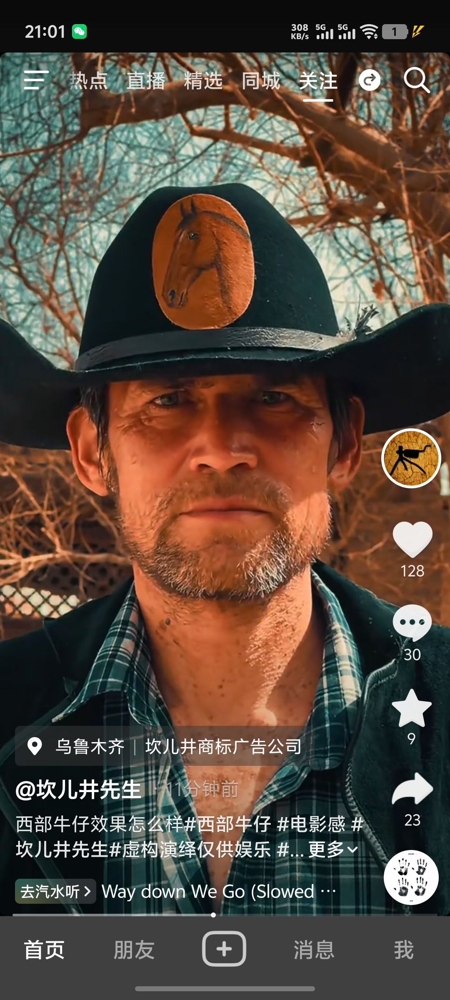
新疆从不缺明星脸[赞] 坎儿井演员VS奥斯卡影帝。[比心][玫瑰]
[思考] 一样的 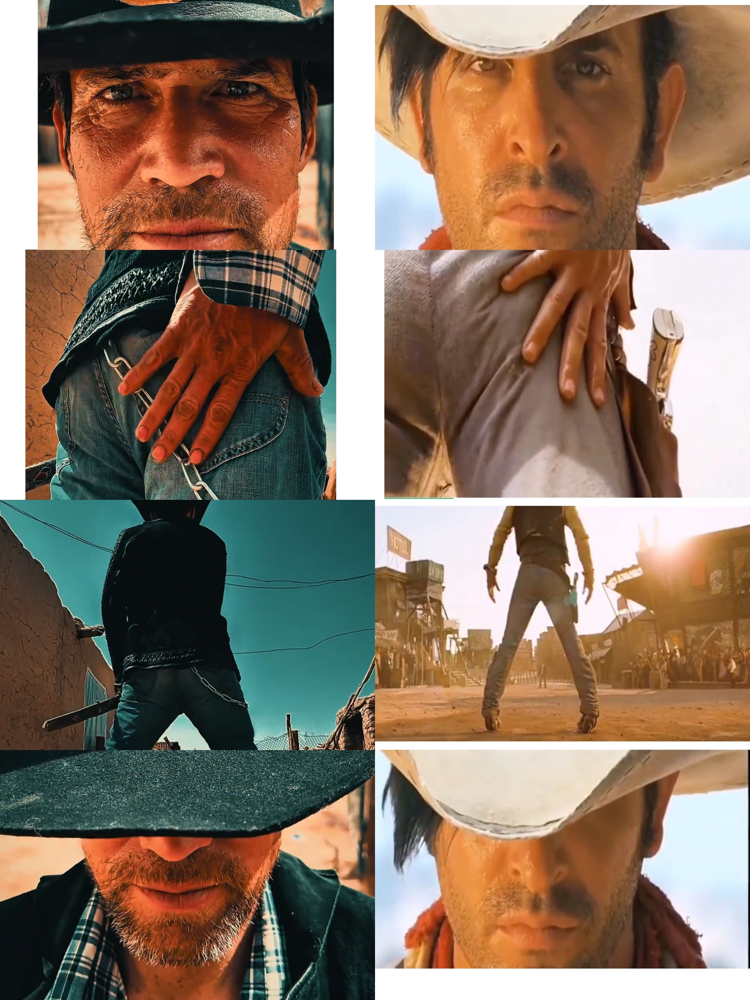
我觉得这个事情再次证明了。电影好不好看跟经费没什么关系。跟明星也没什么关系。就这短短的两分钟分镜运镜还有场景构图。镜头语言。已经能秒杀国内三年以内所有商业片了。
护垫到底是谁做的，每次撕下来跟条腐竹一样[憨笑]
把日用的当护垫，把夜用当日用，把超长夜用当夜用[憨笑][比心]
[微笑][微笑]护垫是一种神奇的东西，哪里都粘的很牢，就是不粘内裤，永远都是走着走着变成一坨
生理期知识不应该分性别！都应该是全民普及的基础知识！月经不应该被“调侃”，更不应该羞涩。希望大家理性评论
？ 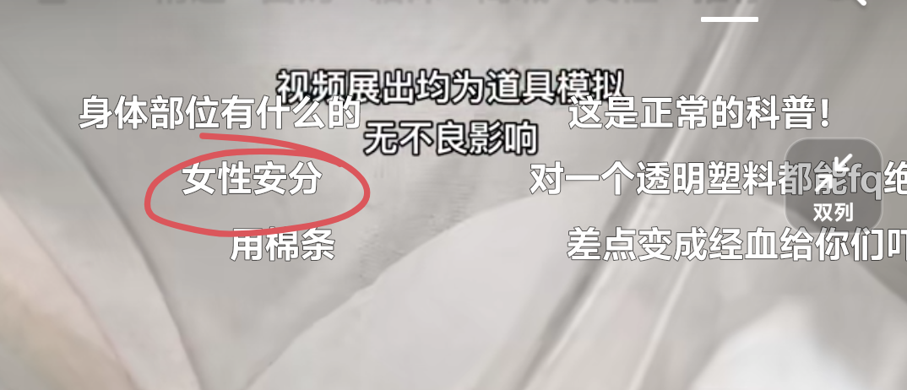
你们瘦的小女孩也会这样吗 我还以为是我太胖了呢[流泪]
我前段时间屁股开了一刀，换药期间屁股一直出血，我一男的也是用上了卫生巾，确实有视频说的这个问题，而且发现卫生巾这玩意真的超级刺挠屁股还会卡屁缝，我问我女朋友说是不是这款卫生巾的原因做的这么垃圾，她跟我说基本上都是这样的。
家里可以请高人了[赞] 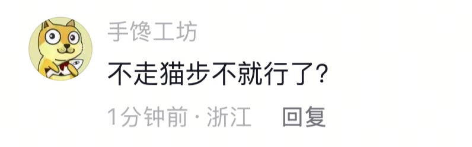
你说这小玩意不粘内裤我已经忍了，把它从内裤上撕下来，然后准备卷成一团扔垃圾桶，刚卷完扔进去，啪的一下它就在垃圾桶里撑开了，然后一个血淋淋的卫生巾就出现在我眼前[微笑][微笑][微笑][微笑][微笑][微笑][微笑]
@晟诚 护垫，卫生巾有的时候走着走着垫的时间长一点…就可能变成腐竹[九转大肠][九转大肠]
我之前一直在想，能不能把旁边两个小翅膀做宽一点，让它们可以互相粘上，因为这玩意儿不粘内裤，但能粘到它们自己[泪奔] 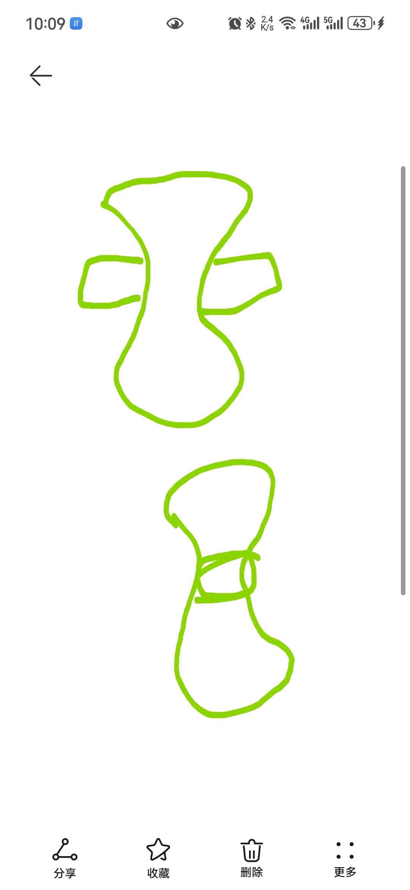
谁懂夜用280mm的含屎量[憨笑][赞]
我感觉中间那两小耳朵完全没粘性[憨笑]
救命 谁会想到这一点[流泪] 真的 哭死
少和亲戚走动，穷了瞧不起你，富了惦记你。
林珺现在很好 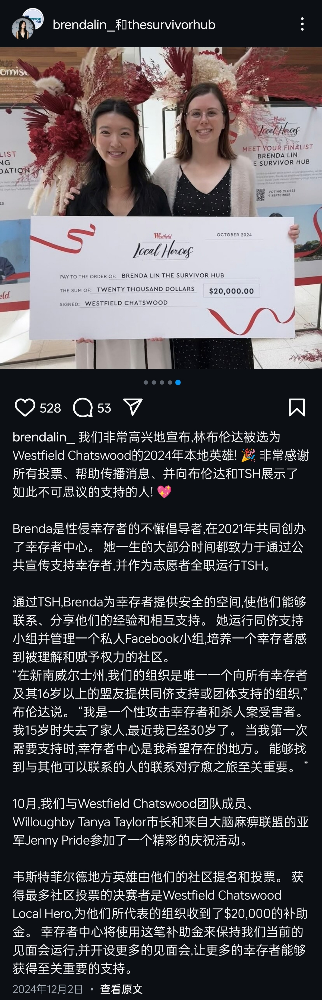
这个女校长，太好了，太负责了
这个姑姑是个实足的帮凶
想吃什么自己夹。筷子一直动不夹菜什么意思
于是发了新视频更全方面的展示了自己的硬狗[愉快]
中国狗的骨头就是硬[赞]
这两条视频有什么不同的硬狗么[黑脸]
算了，让小狗举你吧[我想静静]
建议大家不要把小狗的视频发到网上 因为会有坏人窃取小狗瞳膜信息偷小狗银行卡里的钱[流泪]
宝宝还是你自己跳吧…不要为难小狗了哈哈哈哈哈哈哈
Read more: